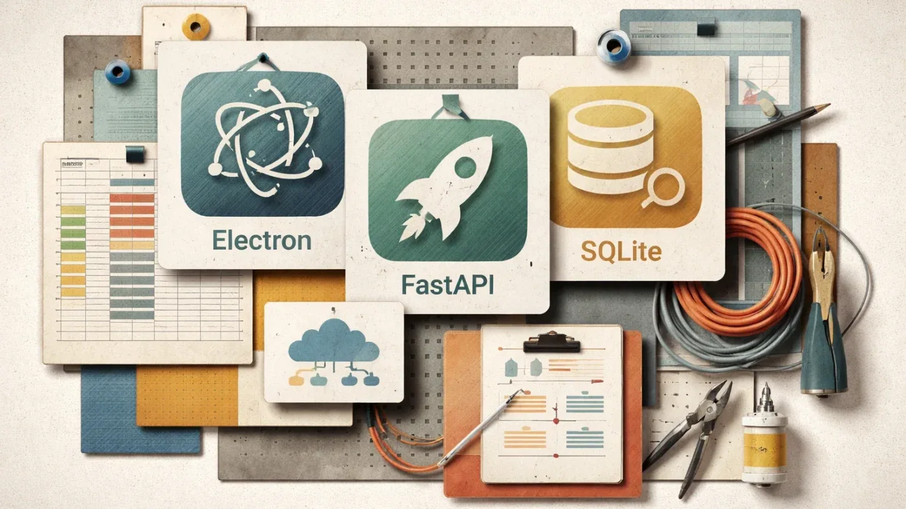

РоссияКод
От биграммной модели до LLM: как устроены языковые модели изнутри
Как биграммная модель на 49 параметрах превращается в GPT: пять шагов эволюции LLM
Habr AI
17 июн.Российский рынок ИИ: государственная политика, отечественные модели, кейсы компаний и академические достижения.
209 материалов
Как биграммная модель на 49 параметрах превращается в GPT: пять шагов эволюции LLM
Что если проектировать архитектуру не для программиста, а для языковой модели — и зачем отказываться от рефакторинга

91% оборота склада — один артикул. Данные были в 1С годами. Как это исправить без дата-сайентистов

Шесть лет в Excel — и 12 дней до рабочего десктопного приложения на Electron и FastAPI
Европейский ИИ провалил тест на дезинформацию: Mistral — 47-е место из 60
Каждый второй абзац заключения в дипломе 2025 года выглядит как машинный текст — данные ReText.AI
Открытый набор навыков от Amplicode учит ИИ-агентов корректно работать с Spring Data JPA, повышая качество кода даже на моделях среднего класса.

Дата-центры в Москве строят собственные электростанции из-за дефицита сетевой мощности

Тестируем модный скилл Caveman: экономия токенов оказалась мифом, а качество задач упало

Как измерить опыт разработчика объективно: от DORA до DX Core 4 — разбор ключевых фреймворков

За пару часов понять разницу между ИИ-агентом и чат-ботом и найти задачи для автоматизации — что внутри бесплатного курса.

Как дать ИИ-агенту право менять данные на складе — и сохранить аудит и безопасность

ASCO 2026: ИИ-симуляторы ускоряют решения ординаторов на 28% — и создают новый риск

ИИ слушает интервью и подсказывает вопросы, которые поставят кандидата в тупик

Claude Code случайно снёс продакшен на AWS — история восстановления БД и уроки для инженеров.

BIM застрял в презентациях, а камеры смотрят только после ЧП — что реально меняет стройку в 2026 году

Математики объединились против ИИ: что не так с достижениями OpenAI и чем это грозит науке

Практическое руководство по генерации тестовой документации с помощью ИИ: контекст, промпты, ревью и формат для TMS.

ЭвоКарго объяснила, почему датчики автономного грузовика врут — и как система всё равно едет точно

Как отличить реальную пользу ИИ от хайпа: метрики, которые связывают бизнес-цели с фактическими показателями.

Главный инженер Claude Code о пяти новых нормах работы, когда ИИ пишет код быстрее, чем люди успевают его проверять.

Android 17 для Pixel: музыка по запросу, видео из галереи и «пузыри» поверх любых окон
ИИ следит за походкой коров: система из Тимирязевки отслеживает 45 точек тела с точностью 97%
ИТМО и MWS ИИ хотят ускорить нейросети в 4 раза и научить ИИ понимать арабский и казахский

Почему умение объяснять «что хочу» стало важнее умения писать код — и при чём тут Золотая рыбка

118 000 уволенных айтишников за полгода — и компании при этом прибыльны. Что происходит с профессией разработчика

DHH против ThePrimeagen: почему Zig, curl и NetBSD закрылись для ИИ-кода — и кто из них прав

ВТБ объяснит инвестору каждую сделку ИИ: прогноз доходности и аналитика портфеля в одном приложении

Томск — ИИ-столица России: почему не Москва и кто теснит ChatGPT

Один промпт, одна ночь — и 95% браузерных тестов пройдено. Как это работает?